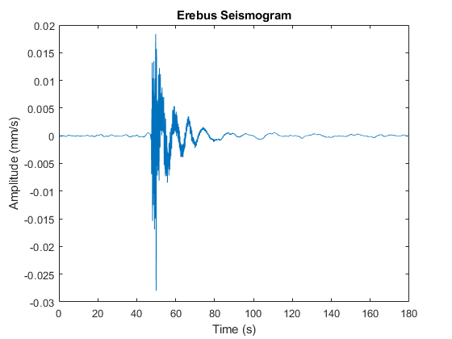
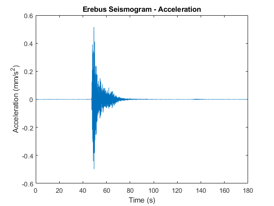
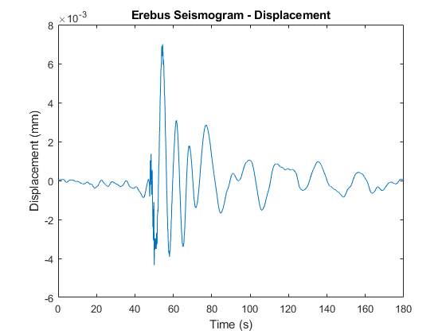

Contents
- 1: Read in Erebus_seismogram.mat. This is a velocity seismogram (i.e., vertical ground motion) signal. Information about the signal(called data) is found in the variable hdr. hdr.sps gives the sample rate in Hz and hdr.atod gives the conversion used by the digitizer in units of volts/count.
- 2: Plot a properly scaled acceleration seismogram (units of mm/s2). Be careful to use the proper time differentiation constant. Hint: you can use diff to differentiate.
- 3: Plot a properly scaled displacement seismogram (units of mm). Hint: you can use cumsum to differentiate.
%%%%% ASSIGNMENT03 (2023) - Nicole Hucke %%% %%%%% INTRODUCTION TO LINEAR OPERATORS %%%%
1: Read in Erebus_seismogram.mat. This is a velocity seismogram (i.e., vertical ground motion) signal. Information about the signal(called data) is found in the variable hdr. hdr.sps gives the sample rate in Hz and hdr.atod gives the conversion used by the digitizer in units of volts/count.
Note that the seismometer sensitivity is 3200 V/m/s. Plot the seismogram with proper time and amplitude scaling. For amplitude of your graph use units of mm/s. Note: for seismograms you will want to remove the DC offset, which can be done by subtracting the mean or using the MATLAB function detrend.
load('Erebus_seismogram.mat'); % load the data sps = hdr.sps; % sample rate in Hz fprintf('Sample rate: %.2f Hz\n', sps); atod = hdr.atod; % conversion used by the digitizer in units of volts/count fprintf('Conversion used by the digitizer: %.2e volts/count\n', atod); sensitivity = 3200; % seismometer sensitivity in volts/(m/s) % Note: the raw signal from "data" is just in counts signal = data * atod; % convert the seismogram signal from counts to volts disp(signal(1:10)) % display the first 10 values of the signal in volts % Note: the signal amplitude need to be in mm/s signal = (signal / sensitivity) * 1000; % convert the signal from volts to mm/s using the seismometer sensitivity disp(signal(1:10)) % display the first 10 values of the signal in mm/s % Note: must remove the DC offset from the signal using the detrend function det_signal = detrend(signal); % plot the seismogram time = (0:length(det_signal)-1) / sps; % create a time vector based on the sample rate and signal length (number of samples) plot(time, det_signal); xlabel('Time (s)'); ylabel('Amplitude (mm/s)'); title('Erebus Seismogram');
Sample rate: 40.00 Hz Conversion used by the digitizer: 1.19e-06 volts/count -0.6893 -0.6893 -0.6893 -0.6893 -0.6893 -0.6893 -0.6893 -0.6894 -0.6894 -0.6894 -0.2154 -0.2154 -0.2154 -0.2154 -0.2154 -0.2154 -0.2154 -0.2154 -0.2154 -0.2154
2: Plot a properly scaled acceleration seismogram (units of mm/s2). Be careful to use the proper time differentiation constant. Hint: you can use diff to differentiate.
dt = 1/sps; % determine time step fprintf('Time step for differentiation: %.2e seconds\n', dt); accel = diff(det_signal)/dt; % use diff to differentiate % Note: the diff function will return a vector of N-1, so the original time vector will not work % plot the acceleration seismogram figure time2 = (0:length(accel)-1) / sps; plot(time2, accel); xlabel('Time (s)'); ylabel('Acceleration (mm/s^2)'); title('Erebus Seismogram - Acceleration');
Time step for differentiation: 2.50e-02 seconds
3: Plot a properly scaled displacement seismogram (units of mm). Hint: you can use cumsum to differentiate.
displ = cumsum(det_signal)*dt; % plot the displacement seismogram figure plot(time, displ); xlabel('Time (s)'); ylabel('Displacement (mm)'); title('Erebus Seismogram - Displacement');